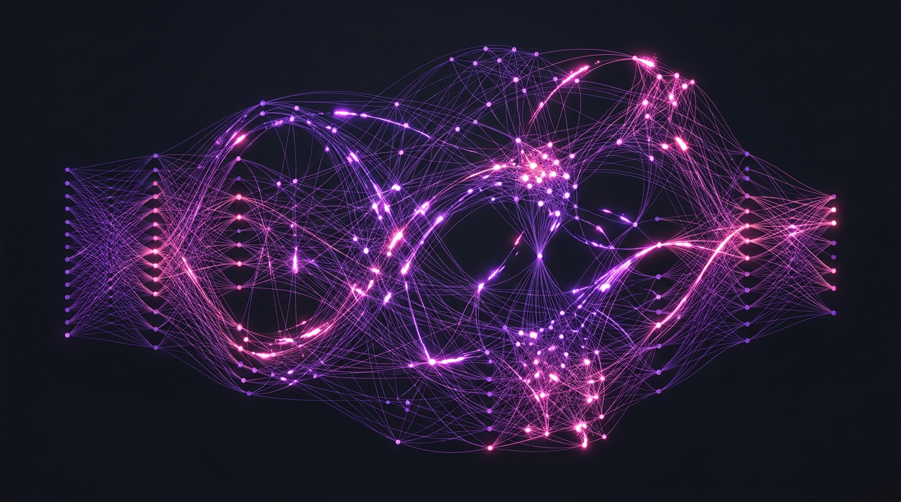

Current ResearchApplied ML for Neural Information Encoding
Research Assistant at EPFL's Laboratory of Physics of Biological Systems. Developing ML models to predict behavioral responses from neuronal activity and investigating representations of information encoding in biological neural systems.